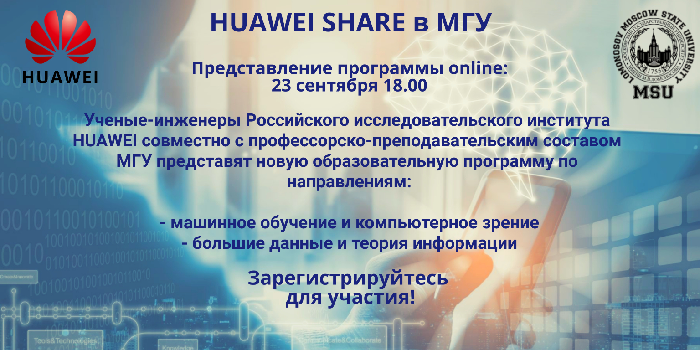

About the SHARE MSU program
School of Huawei Advanced Research Education at Lomonosov Moscow State University, or SHARE MSU, was organized in September 2019 as a result of the synergy of one of the leading multinational corporations in research and development (R&D) - Huawei - and the largest University in Russia - Lomonosov Moscow State University.The goals of this school are:
- Teaching and covering cutting-edge research areas in data science, digital chip synthesis, information and graph theory, error-correcting codes, functional programming, digital signal and image processing, machine learning, computer vision, neural network theory, as well as necessary software and hardware solutions to work with these areas;
- Involvement of undergraduate and graduate students (primarily natural science faculties) in the real cycle of the modern research process;
- Building connection between industry and academia.
- Duration of training
- 2 years
- Study load
- On average, 2 lecture courses per semester + possible additional seminars
- Enrollment
- 4-6 year students, masters, PhD students and graduates of the following faculties of Lomonosov Moscow State University: mechanics and mathematics, computational mathematics and cybernetics, physics, space research
- Cost of education
- Free
- Certification
- SHARE MSU graduates receive a Certificate of Additional Education from Lomonosov Moscow State University
News
- 2021, February 8
- The schedule has been updated for 2020-2021 academic year.
- General schedule grid.
- 2020, September 30
- SHARE MSU 2020 was re-presented online at 18:00.
- Additional presentation of the 2020 program. Video conference recording.
- 2020, September 28
- Online re-submission of the program - 30 september at 18:00. You can fill out an application for participation in the program by link. To participate in an organizational meeting, you must fill out a form, since a link to an online meeting will be sent to the email address specified in the form.
- Invitation poster
- 2020, September 23
- SHARE MSU 2020 program was presented online at 18:00.
- Presentation of the 2020 program. Video conference recording.
- 2020, September 17
- Online program presentation - 23 september at 18:00. You can fill out an application for participation in the program by link. To participate in an organizational meeting, you must fill out a form, since a link to an online meeting will be sent to the email address specified in the form.
- Invitation poster
 - 2020, June 26
- The 6 best students among those with the highest scores were selected as interns to the Intelligent Systems and Data Science Laboratory of the Huawei Moscow Research Center.
- 2020, May 29
- Additional lecture on the course "Practical issues of machine learning" with presentations of the best works at the kaggle-competition.
- 2020, March 17
- Lectures of all courses go online in connection because of the COVID-19 pandemics.
- 2020, February 18
- Specialization "Computer Vision and Machine Learning" began the second semester with a lecture of the course "Practical Issues of Machine Learning" in the auditorium 1205 of the main building MSU.
- 2019, September 28
- Specialization "Computer Vision and Machine Learning" started with the first lecture of the course "Mathematical Methods of Digital Signal Processing" in auditorium 1503 of the main building MSU.
- 2019, September 19
- The SHARE MSU 2019 program was presented at 17:00 in auditorium 1624 in the main building of Moscow State University.
- Presentation program-2019.
- Invitation poster
- Photo from the meeting

- 2019, September 15
- The registration page for the SHARE MSU program has been created at timepad.
Schedule
General schedule grid2020-2021 academic year
2021, Spring semester
- Specialization "Machine Learning and Computer Vision"
- Year 1, Course "Mathematical Methods of Digital Image Processing"
- Place: online
- Time: Saturday, 16:45
- Start: 13.02.2021
- Year 1, Course "Practical issues of modern computer vision"
- Place: online
- Time: Tuesday, 16:45
- Start: 16.02.2021
- Year 1, Seminar "Applied Computer Vision"
- Place: online
- Time: Tuesday, 18:15
- Start: 16.02.2021
- Year 2, Course "Introduction to the Theory of Neural Networks II"
- Place: online
- Time: Wednesday, 15:00
- Start: 10.02.2021
- Specialization "Big Data and Information Theory"
- Year 1, Course "Application of graph theory to the synthesis of LSI II"
- Place: online
- Time: Friday, 15:00
- Start: 12.02.2021
- Year 1, Course "Development of big-data-applications on Apache Spark"
- Place: online
- Time: Friday, 18:30
- Start: 12.02.2021
2020, Autumn semester
- Specialization "Machine Learning and Computer Vision"
- Year 1, Course "Mathematical Methods of Digital Signal Processing"
- Place: online
- Time: Saturday, 16:45
- Start: 10.10.2020
- Year 1, Course "Practical issues in machine learning"
- Place: online
- Time: Tuesday, 18:00
- Start: 06.10.2020
- Year 1, Seminar "Applied machine learning"
- Place: online
- Time: Tuesday, 19:30
- Start: 06.10.2020
- Year 1, Seminar "The Python Programming Language for Researcher"
- Place: online
- Time: Friday, 18:00
- Start: 02.10.2020
- Year 2, Course "Introduction to the theory of neural networks I"
- Place: online
- Time: Wednesday, 15:00
- Start: 07.10.2020
- Specialization "Big Data and Information Theory"
- Year 1, Course "Application of graph theory to the synthesis of LSI I"
- Place: online
- Time: Friday, 15:00
- Start: 09.10.2020
- Year 1, Course "Functional Programming in Scala / Haskell"
- Place: online
- Time: Friday, 18:00
- Start: 09.10.2020
- Year 2, Course "Software development environments for VLSI"
- Place: online
- Time: Friday, 13:00
- Start: 09.10.2020
- Year 2, Course "Introduction to the theory of error-correcting coding"
- Place: online
- Time: Tuesday, 18:30
- Start: 06.10.2020
2019-2020 academic year
2020, Spring semester
- Specialization "Machine Learning and Computer Vision"
- Year 1, Course "Mathematical Methods of Digital Image Processing"
- Place: auditorium 1205, main building MSU
- Time: Saturday, 16:45
- Year 1, Course "Practical issues in machine learning"
- Place: auditorium 1205, main building MSU
- Time: Tuesday, 18:30
- Specialization "Big Data and Information Theory"
- Year 1, Course "Application of graph theory to the synthesis of LSI II"
- Year 1, Course "Development of big-data-applications on Apache Spark"
2019, Autumn semester
- Specialization "Machine Learning and Computer Vision"
- Year 1, Course "Mathematical Methods of Digital Signal Processing"
- Place: auditorium 1503, main building MSU
- Time: Saturday, 16:45
- Year 1, Course "Practical issues of modern computer vision"
- Place: auditorium 1205, main building MSU
- Time: Tuesday, 18:30
- Specialization "Big Data and Information Theory"
- Year 1, Course "Application of graph theory to the synthesis of LSI I"
- Year 1, Course "Functional Programming in Scala / Haskell"
Courses SHARE MSU
- Specialization "Machine Learning and Computer Vision"
- Course "Mathematical Methods of Digital Signal Processing"
- Duration: 1 semester
- Teachers: Ph.D., senior researcher Mazurenko Ivan Leonidovich, post-graduate student Dzabraev Maxim Dmitrievich
-
About the course
- Fundamentals of the theory of digital signal and image processing
- Basic methods of digital processing of signals and images in the time / space and frequency domains
- The main classical tasks of digital signal and image processing
- Examples of applied tasks
- Libraries of digital signal and image processing in Matlab/Octave
- OpenCV library
- Course "Mathematical Methods of Digital Image Processing"
- Duration: 1 semester
- Teachers: Ph.D., senior researcher Mazurenko Ivan Leonidovich, post-graduate student Dzabraev Maxim Dmitrievich
-
About the course
- Fundamentals of the theory of digital signal and image processing
- Basic methods of digital processing of signals and images in the time / space and frequency domains
- The main classical tasks of digital signal and image processing
- Examples of applied tasks
- Libraries of digital signal and image processing in Matlab/Octave
- OpenCV library
- Course "Practical Issues in Machine Learning"
- Duration: 1 semester
- Teachers: Doctor of Physical and Mathematical Sciences, prof. Babin Dmitry Nikolaevich, Ph.D. Ivanov Ilya Evgenievich, Ph.D. Petiushko Aleksandr Aleksandrovich
-
About the course
- Basic Machine Learning Tasks and Quality Metrics (ROC-Curve)
- Classification methods
- Regression methods
- Algorithms compositions
- Course "Practical issues of modern computer vision"
- Duration: 1 semester
- Teachers: Doctor of Physical and Mathematical Sciences, prof. Babin Dmitry Nikolaevich, Ph.D. Ivanov Ilya Evgenievich, Ph.D. Petiushko Aleksandr Aleksandrovich
-
About the course
- The main tasks of computer vision (classification, detection, segmentation, image enhancement)
- The history of applying convolutional neural networks to images
- Generative models
- Examples of applied tasks
- Course "Introduction to the theory of neural networks"
- Duration: 2 semesters
- Teachers: Ph.D., Assoc. Chasovskikh Anatoly Aleksandrovich, Ph.D. with. Polovnikov Vladimir Sergeevich, post-graduate student Ronzhin Dmitry Vladimirovich
-
About the course
- Basic neural network architectures and their functional properties
- Optimization of the complexity and speed of neural networks
- Justification of the procedure for training neural networks of direct propagation
- Features of the architecture and training method of recurrent neural networks
- Open image databases
- Convolutional neural networks. Tasks of classification, detection, segmentation of images
- Recurrent neural networks. Memory Simulation and Signal Sequence Processing
- Seminar "Applied Machine Learning"
- Duration: 1 semester
- Teachers: Doctor of Physical and Mathematical Sciences, prof. Babin Dmitry Nikolaevich, Ph.D. Ivanov Ilya Evgenievich, Ph.D. Petiushko Aleksandr Aleksandrovich
-
About the seminar
- Data manipulation and machine learning frameworks in Python
- Machine learning competition
- Seminar "Applied Computer Vision"
- Duration: 1 semester
- Teachers: Doctor of Physical and Mathematical Sciences, prof. Babin Dmitry Nikolaevich, Ph.D. Ivanov Ilya Evgenievich, Ph.D. Petiushko Aleksandr Aleksandrovich
-
About the seminar
- Image and neural network frameworks in Python
- Computer vision competition
- Seminar "Python Programming Language for Researcher"
- Duration: 1 semester
- Teachers: Doctor of Physical and Mathematical Sciences, prof. Babin Dmitry Nikolaevich, Ph.D. Ivanov Ilya Evgenievich, Ph.D. Petiushko Aleksandr Aleksandrovich, Ph.D. Ivanyuta Andrey Sergeevich, Korvyakov Vladimir Petrovich
-
About the seminar
- Python basics
- Specialized libraries (Numpy, Pandas, scikit-learn)
- Data visualization (Matplotlib, openCV, scikit-image)
- Specialization "Big Data and Information Theory"
- Course "Application of graph theory to the synthesis of LSI"
- Duration: 2 semesters
- Teachers: Ph.D., Assoc. Chasovskikh Anatoly Aleksandrovich, Ph.D. with. Polovnikov Vladimir Sergeevich, post-graduate student Ronzhin Dmitry Vladimirovich
-
About the course
- Mathematical model of LSI design based on the technology of their synthesis
- Planar graphs. The Pontryagin - Kuratovsky theorem. Algorithm for stacking planar graphs, characteristics of nonplanar graphs
- Minimal Rectangular Steiner Trees, Exact and Approximate Solutions
- Graph coloring theorems, realization of power sequences by graphs
- Flat circuits, an estimate of the complexity of arithmetic flat circuits
- Element placement heuristic algorithms
- Optimizing wire routing
- Synthesis of specialized circuits: sorters, arithmetic circuits, etc.
- Course "Software development environments for VLSI"
- Duration: 1 semester
- Teachers: Doctor of Physical and Mathematical Sciences, prof. Hasanov Elyar Eldarovich, Ph.D. n., m. n. with. Shutkin Yuri Sergeevich
-
About the course
- Chip Design Basics
- Development of simulation and testing tools for hardware designs
- Analyzing the complexity of hardware designs
- Wireless transmission of information
- Storage systems
- Error-correction codes
- Course "Introduction to the theory of error-correcting coding"
- Duration: 1 semester
- Teachers: Ph.D., Assoc. Panteleev Pavel Anatolievich
-
About the course
- Classical algebraic codes (BCH, Reed-Solomon, Reed-Muller codes)
- Modern code designs (low density, convolutional, polar codes)
- Practical aspects of implementing encoders / decoders
- Distributed storage codes
- Quantum codes
- Course "Functional Programming in Scala / Haskell"
- Duration: 1 semester
- Teachers: Ph.D., junior researcher Sokolov Andrey Pavlovich, Moiseev Stanislav Vladimirovich
-
About the course
- Typed Lambda Calculus, Hindley-Milner Type System
- Curry-Howard correspondence between computer programs and mathematical proofs
- Brouwer-Heyting-Kolmogorov Interpretations of Intuitionistic Logic
- Learning functional programming and related concepts (functions, functors, applicative functors, monads, monad-transformers, etc.)
- Functional data structures and algorithms
- Course "Apache Spark Big Data Application Development"
- Duration: 1 semester
- Teachers: Ph.D., junior researcher Sokolov Andrey Pavlovich, Moiseev Stanislav Vladimirovich
-
About the course
- Distributed data storage and processing systems
- Design and analysis of distributed algorithms
- Framework Apache Spark
- Statistical data analysis
- Working with tables
- Tasks on Graphs
Internships
To support the best students in the SHARE MSU program, an internship program has been opened at the Intelligent Systems and Data Science Laboratory of the Huawei Moscow Research Center, where interns can gain invaluable real-world industrial experience in one of the leading multinational corporations in the field of R&D, solving interesting and non-standard problems at the edge of science and technology.To apply for an internship, you should send an e-mail to SHARE@intsys.msu.ru with "Topic" line [Internship] your resume (CV), in which it is desirable to present:
- Your full name, contact information (e-mail and phone number);
- A photo;
- Information about your education;
- Additional relevant courses listened to;
- Info about participation in school and / or student olympiads and competitions;
- Implemented projects (for example, on github);
- Work experience and / or internship;
- Your strong professional and personal qualities;
- Any other information that you deem necessary.
Intelligent Systems and Data Science Laboratory
Intelligent Systems and Data Science Technology Center was established within the framework of the Huawei Moscow Research Center back in September 2014 under the leadership of Ph.D., senior researcher Mazurenko Ivan Leonidovich. Research areas of the Laboratory are listed below:- Distributed storage systems and big data processing;
- Working with huge structured data sets;
- Machine learning algorithms;
- All classic computer vision problems;
- Error-correcting codes (including for quantum simulators);
- Optimizing Next Generation Chips;
- Fundamental Problems of Artificial Intelligence.
- Lomonosov Moscow State University;
- SPbSU;
- SkolTech;
- MIPT.
Contacts
- Program SHARE MSU
- E-mail: SHARE@intsys.msu.ru
- Telegram-channel: https://t.me/joinchat/AAAAAE_r4XKzEDaUKy1FwA
- Program coordinator: Petiushko Aleksandr Aleksandrovich (e-mail: petiushko.aleksandr@intsys.msu.ru)
- Executive Secretary: Kochetkova Tatiana Yurievna (e-mail: kochetkova.tatiana@huawei.com, tel.: +7 (925) 597-69-19)
- Direction "Machine Learning and Computer Vision"
- Telegram-channel: https://t.me/joinchat/AAAAAEUmx5cJLOdLXsOt8g
- Direction "Big Data and Information Theory"
- Telegram-channel: https://t.me/joinchat/AAAAAFLAuQvYDpobU3x4WQ
- Courses "Mathematical Methods for Digital Signal and Image Processing"
- Telegram-channel: https://t.me/joinchat/AAAAAEz_z-20xz0UUF6wQw
- Courses "Introduction to the theory of neural networks"
- Telegram-channel: https://t.me/joinchat/AAAAAFCZElJDhPdA_0XV7g
- Course "Functional Programming in Scala / Haskell"
- Telegram-channel: https://t.me/joinchat/AAAAAFjy2F6xZwhLgXxr9A
- Course "Introduction to the theory of error-correcting coding"
- Telegram-channel: https://t.me/joinchat/GZYNExrEjIXscy0RPHI8rg
- Director of Department
- Deputy Dean for Academic Affairs Popelensky Mikhail Yurievich
- Auditorium
- 1507a main building MSU
- Branch website
- www.math.msu.ru
- Telephone
- +7 (495) 939-32-11